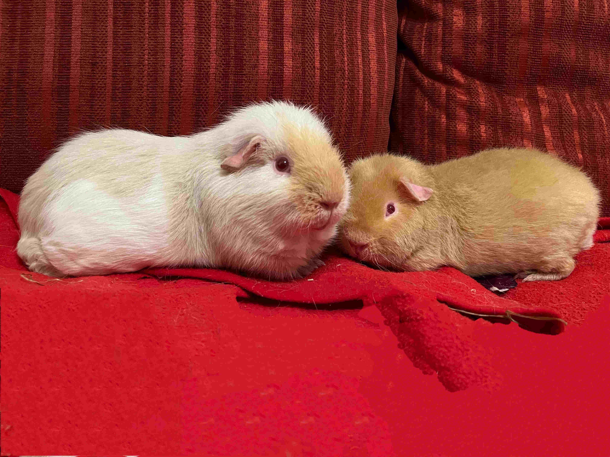

Guinea Pig at a glance
The guinea pig or domestic guinea pig (Cavia porcellus), is a species of rodent belonging to the genus
Cavia in the family Caviidae. Despite their common name, guinea pigs are not native to Guinea, nor are they
closely related biologically to pigs, and the origin of the name is still unclear.
They originated in the
Andes of South America. Studies based on biochemistry and hybridization suggest they are domesticated animals
that do not exist naturally in the wild, descendants of a closely related cavy species such as C.
tschudii.
Their docile nature, friendly responsiveness to handling and feeding, and the relative ease
of caring for them have made guinea pigs a continuing popular choice of household pet.
Source: Wikipedia

Keeping Guinea pig as a pet
Typically guinea pigs live for 5-6 years, but some may live longer.
Guinea pigs are active up to 20 hours per day, and only sleep for short periods.
Guinea pigs are highly social - in the wild they live in close family groups of 5-10 guinea
pigs, though several groups may live in close proximity to form a colony.
Guinea pigs get lonely and shouldn't be kept alone - they're happiest in pairs.
Guinea pigs need a high fibre diet supplemented with vitamin C, as they lack the enzyme
needed to synthesise vitamin C and can only store it for short periods.
Source: RPSCA

A guinea pig mom once remarked:
"If I know what love is, it is because of them."
More cute photos to appreciate!
- Short-haired piggies
- Not-so-short-haired piggies
- Long-haired piggies